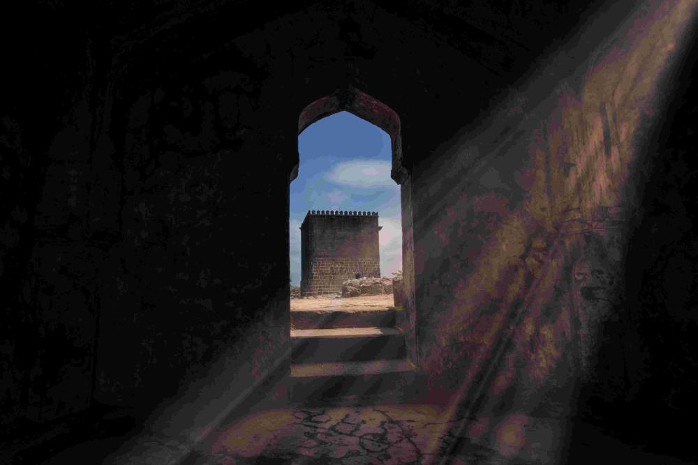
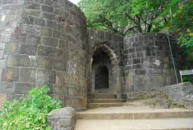

Shivneri Fort is a 17th-century military fortification located near Junnar in Pune district in Maharashtra, India. It is the birthplace of Chhatrapati Shivaji Maharaj , the emperor and founder of Maratha Empire.Shivneri is known to be a place of Buddhist dominion from the 1st century AD. Its caves, rock-cut architecture and water system indicate the presence of habitation since 1st century AD. Shivneri got its name as it was under the possession of the Yadavas of Devagiri. This fort was mainly used to guard the old trading route from Desh to the port city of Kalyan. The place passed on to the Bahmani Sultanate after the weakening of Delhi Sultanate during the 15th century and it then passed on to the Ahmadnagar Sultanate in the 16th century. In 1595, a Maratha chief named Maloji Bhonsle, the grandfather of Shivaji Bhosale, was enabled by the Ahmadnagar Sultan, Bahadur Nizam Shah and he gave him Shivneri and Chakan. Chhatrapati Shivaji Maharaj was born at the fort on 19 February 1630 (some accounts place it 1627), and spent his childhood there. Inside the fort is a small temple dedicated to the goddess Shivai Devi, after whom Shivaji was named. The English traveller Fraze visited the fort in 1673 and found it invincible. According to his accounts, the fort was well-stocked to feed thousand families for seven years. The fort came under the control of the British Rule in 1820 after the Third Anglo-Maratha War.

